Make it understandable at a glance
The first screen should answer the most important question quickly: what kind of day is this?
A weather app focused on clearer forecasting, calmer visuals, and more human daily guidance.
Weather apps are one of the most frequently used utility products, but many still feel either too technical, too generic, or too visually disconnected from the actual mood of the day.
I wanted to explore how a weather app could become more than a place to check numbers, and instead feel like a product that helps people quickly understand the day ahead.
This project started as a vibe-coding design exploration around weather visualization, but gradually evolved into a broader product exercise: how to combine forecast data, atmospheric UI, and decision-support features into one cohesive experience.
Even when forecast data is available, users still have to do a lot of mental work. They need to interpret whether the weather feels pleasant or harsh, whether a trip will be comfortable, whether rain risk is disruptive, or whether UV exposure matters enough to change behavior.
How might I make weather easier to understand at a glance?
How might visuals support comprehension instead of decoration?
How might the app move beyond static forecast display into practical guidance?
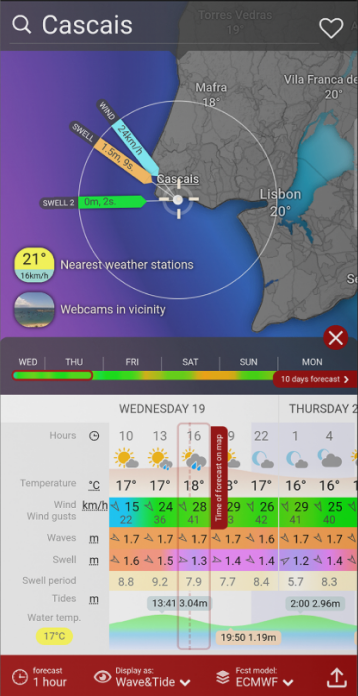


Weather is a high-frequency use case. People check it before commuting, before traveling, before exercising, before going out, or simply when deciding what kind of day they are stepping into.
That means even small usability issues add up quickly:
A better weather experience is not just about aesthetics. It is about reducing friction in everyday decision-making.
The first screen should answer the most important question quickly: what kind of day is this?
The interface should feel atmospheric and expressive, but never at the cost of clarity.
Features should help users decide what to do, not only show raw forecast values.
The product should support future features like warnings, trip planning, and smart summaries without feeling fragmented.
A large part of the project involved iterative exploration. Rather than locking the UI early, I treated the app as a system that needed to balance expression and utility.

Early visual exploration started before the app was fully built. I wanted the visual tone to feel cozy, vibey, and storybook-like.
One major exploration track focused on how different weather conditions should feel. Instead of relying on a single illustration style for all states, I explored condition-specific moods.


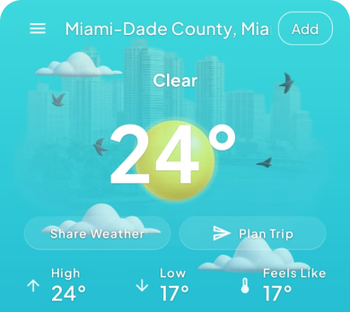
The design challenge here was subtlety. If the visuals became too decorative, they distracted from the forecast. If they were too restrained, they lost emotional value.
The goal became to create a visual language that reinforced the weather state while staying in the background enough for the data to remain primary.
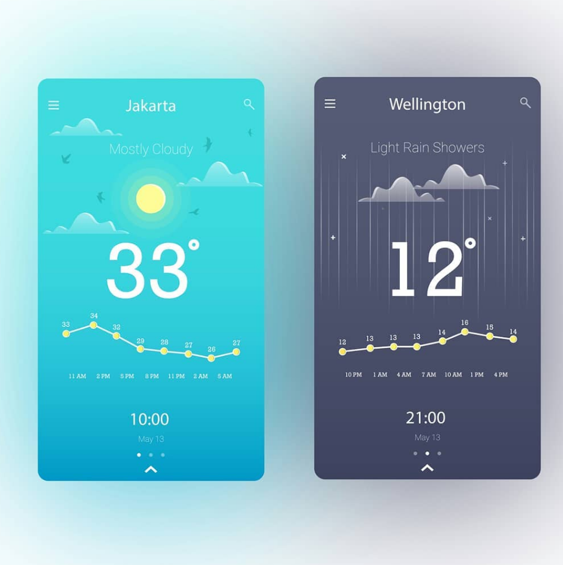
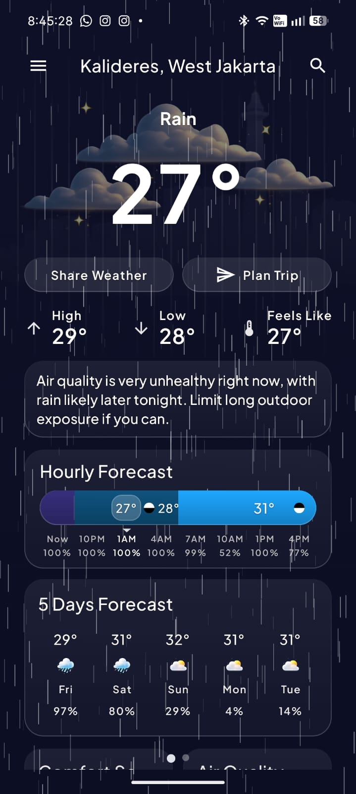
Another major exploration area was deciding what should be most prominent.
A weather app can easily become overloaded: temperature, feels like, hourly forecast, daily forecast, humidity, UV, wind, warnings, precipitation, sunrise, sunset, and more. Showing everything equally makes nothing feel important.
I explored different hierarchy approaches to answer:
One of the most interesting explorations was around interpretation. I wanted the app to move beyond showing weather values and toward helping users make sense of them.
This was especially relevant because weather APIs do not always provide perfect data coverage, especially for route-level or hourly prediction use cases. That forced the design to think carefully about confidence, usefulness, and transparency.

Condition-based visuals give the product personality and make the experience feel aligned with the outside world.
The home screen is designed to quickly communicate what kind of day it is with a readable structure and clear temperature hierarchy.
The layout prioritizes current understanding first, then unfolds into hourly, daily, and supporting metrics.
Route and destination context make travel-related weather feel more relevant, especially for longer journeys.
Smart features translate forecast data into practical advice for everyday activities and travel, making the app feel more supportive than a raw data utility.
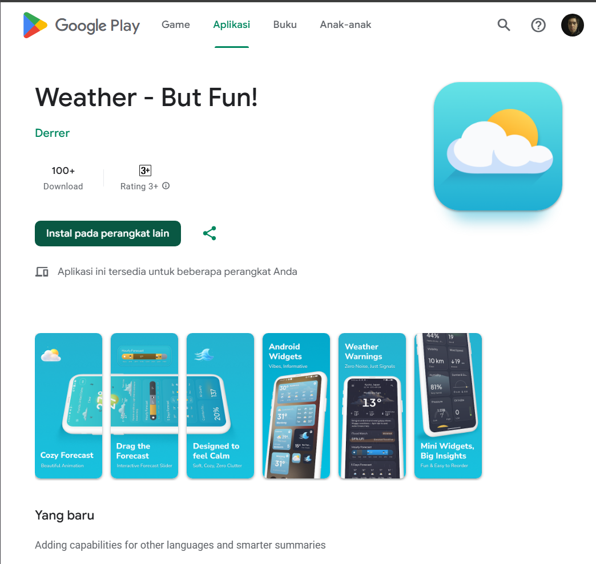
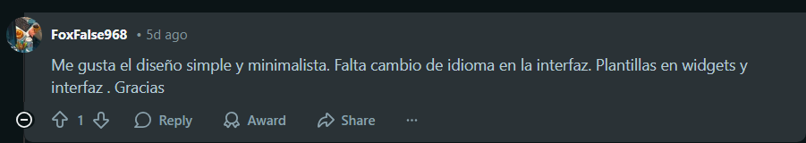
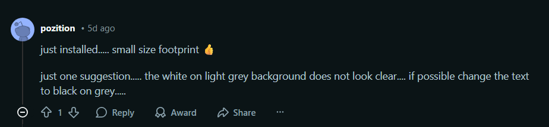
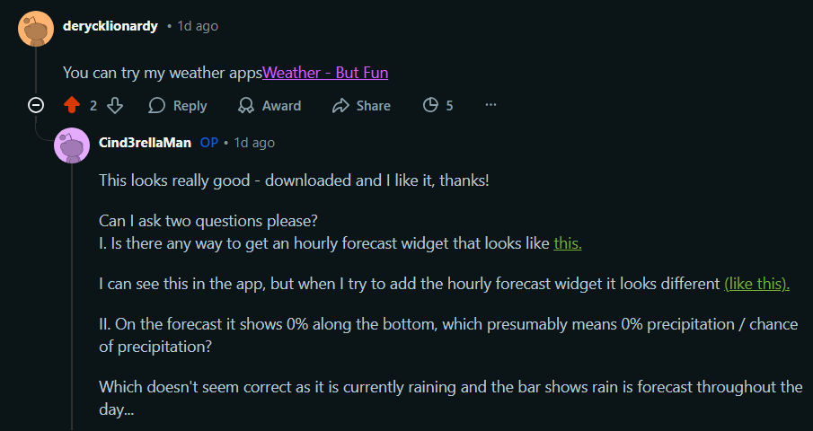
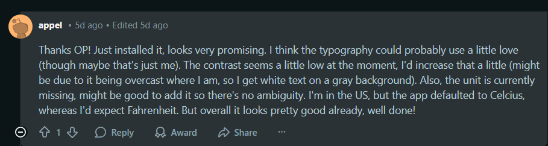
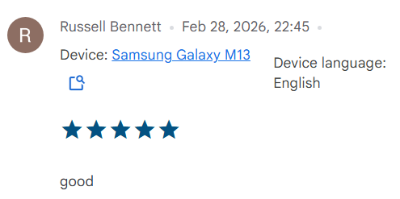

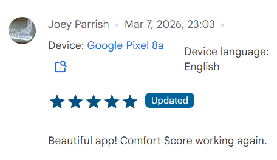
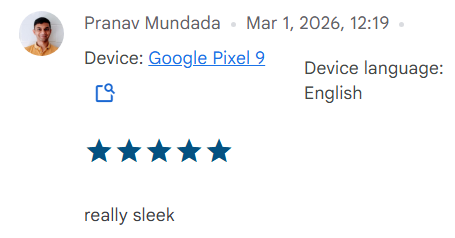
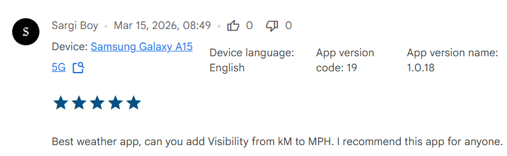
This project taught me that weather design is not only about presenting data cleanly. It is also about helping users build confidence in their everyday decisions.
I learned that:
Most importantly, I learned that even a familiar category like weather still has room for strong product thinking when the design challenge is framed around human understanding rather than feature parity.